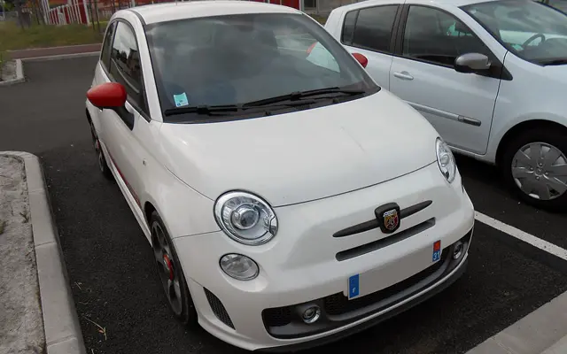

Par Motor › Precios por modelo › Abarth 500 y 595
Precio de segunda mano · noviembre de 2026¿Cuánto vale un Abarth 500 y 595 de segunda mano?

Precio justo estimado de un Abarth 500 y 595 usado en España, año por año, con los kilómetros normales para su edad y en buen estado: de 9.100 € a 33.700 €. Para tasar el tuyo con sus kilómetros reales y su estado, usa el tasador gratis.
Precios del Abarth 500 y 595 por año
500 y 595 (2008) (2008–2024)
Precio de nuevo: 1.4 T-Jet 135 CV, 18.500 € · 1.4 T-Jet 145 CV, 21.000 € · 1.4 T-Jet 160 CV, 24.000 €
| Año | Km normales | 1.4 T-Jet 135 CV · Gasolina | 1.4 T-Jet 145 CV · Gasolina | 1.4 T-Jet 160 CV · Gasolina |
|---|---|---|---|---|
| 2024 | 35.000 km | 16.500 € | 18.700 € | 21.400 € |
| 2023 | 50.000 km | 15.800 € | 17.900 € | 20.400 € |
| 2022 | 65.000 km | 15.000 € | 17.100 € | 19.500 € |
| 2021 | 80.000 km | 13.800 € | 15.700 € | 17.900 € |
| 2020 | 95.000 km | 12.400 € | 14.000 € | 16.000 € |
| 2019 | 100.000 km | 11.900 € | 13.500 € | 15.500 € |
| 2018 | 100.000 km | 12.000 € | 13.600 € | 15.500 € |
| 2017 | 100.000 km | 11.900 € | 13.600 € | 15.500 € |
| 2016 | 100.000 km | 11.900 € | 13.500 € | 15.500 € |
| 2015 | 100.000 km | 11.900 € | 13.500 € | 15.400 € |
| 2014 | 100.000 km | 11.800 € | 13.400 € | 15.300 € |
| 2013 | 100.000 km | 11.400 € | 13.000 € | 14.800 € |
| 2012 | 100.000 km | 10.900 € | 12.400 € | 14.100 € |
| 2011 | 100.000 km | 10.400 € | 11.800 € | 13.500 € |
| 2010 | 100.000 km | 9.900 € | 11.300 € | 12.900 € |
| 2009 | 100.000 km | 9.500 € | 10.800 € | 12.300 € |
| 2008 | 100.000 km | 9.100 € | 10.300 € | 11.800 € |
Abarth 500e (2023–hoy)
Precio de nuevo: 500e 155 CV, 38.000 €
| Año | Km normales | 500e 155 CV · Eléctrico |
|---|---|---|
| 2026 | 5.000 km | 33.700 € |
| 2025 | 20.000 km | 30.200 € |
| 2024 | 35.000 km | 28.800 € |
| 2023 | 50.000 km | 27.500 € |
Kilómetros normales: 15.000 al año en gasolina, híbridos y eléctricos, y 20.000 en diésel, con un máximo de 100.000 km (por encima no tasamos: el precio depende demasiado del historial de cada coche). Cifras redondeadas a 100 €.
Preguntas frecuentes
¿Cuánto vale un Abarth 500 y 595 de segunda mano?
Según el año, la versión y los kilómetros, un Abarth 500 y 595 usado vale hoy de 9.100 € a 33.700 € en España. El más barato de nuestra tabla es un 1.4 T-Jet de 2008 (9.100 €) y el más caro un 500e de 2026 (33.700 €). Son precios justos estimados entre particulares y profesionales, con los kilómetros normales para su edad y en buen estado.
¿Qué motorizaciones tiene el Abarth 500 y 595?
En nuestra base de datos hay versiones gasolina y eléctrico, en 2 generaciónes: 500 y 595 (2008) y Abarth 500e.
¿Cómo sé si me piden demasiado por un Abarth 500 y 595?
Abre el tasador de Par Motor, elige el Abarth 500 y 595, el año y los kilómetros reales, y escribe lo que te piden. Te diremos si está por debajo del precio justo (chollo) o por encima (caro). Es gratis y no pide registro ni matrícula.
Otros Abarth
Compara su coste real
El precio de compra es solo una parte. Mira cuánto te costaría al mes con combustible, seguro, neumáticos, mantenimiento y lo que pierde de valor.
Abrir el comparador →